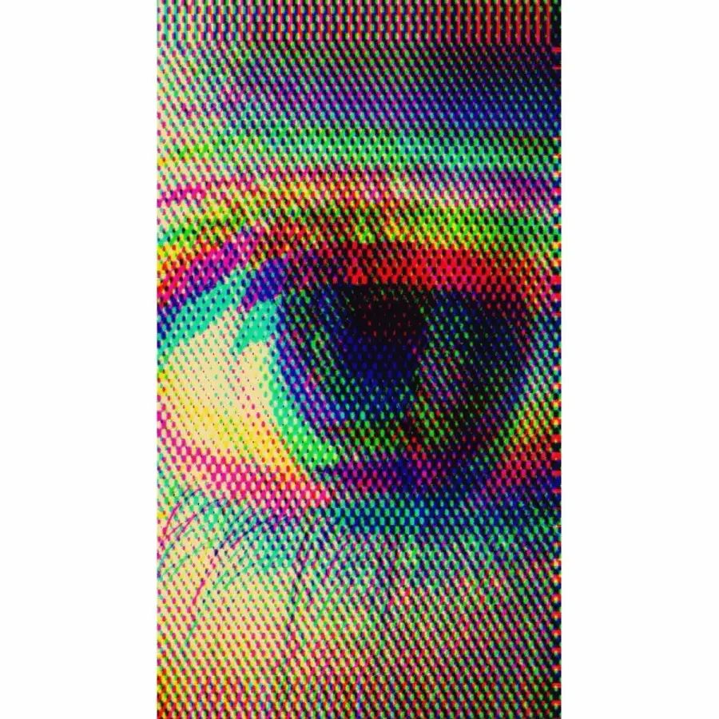

Every fashion trend comes back eventually, but the early-2000s revival has been unusually thorough about it. Low-rise jeans, butterfly clips, frosted lip gloss — and, mercifully, the graphic tee. Y2K graphic tees are everywhere again: the chunky chrome type, the lens flares, the halftone gradients, the slightly-too-much-going-on energy of an era that hadn't yet decided minimalism was a personality. Here's what's actually driving the comeback, and how to wear it now without looking like you raided a 2003 mall kiosk.
What "Y2K graphic tee" actually means
The Y2K look isn't one thing — it's the entire visual language of roughly 1998 to 2008, compressed into a vibe. Chrome and metallic type. Airbrushed gradients. Butterflies, flames, and rhinestones. Halftone dot patterns. And, above all, the psychedelic, slightly unhinged optical stuff — spirals, melting type, and the all-seeing eye that showed up on everything from rave flyers to bootleg band merch.
It was maximalism before maximalism had a name. The defining quality of a Y2K graphic tee is that it is doing too much, on purpose, and proud of it. After fifteen years of minimalist beige and tasteful sans-serif, that confidence reads as genuinely refreshing.
Why the Y2K revival has staying power
Trends run on a roughly twenty-year nostalgia cycle, and the math has simply caught up with the early 2000s. But there are a couple of reasons this particular revival has lasted longer than a single season:
- It's the first major aesthetic being driven by people who don't actually remember it — which means it's nostalgia without the baggage, free to be exaggerated and fun.
- It's a direct reaction against a decade of minimalism. When everything is tasteful and quiet, loud becomes the rebellion.
- The internet loves visual chaos, and Y2K design is engineered for the screenshot. It photographs loud.
None of that is going away soon, which is why the Y2K graphic tee has quietly become a permanent fixture rather than a passing gag.
The psychedelic eye is doing a lot of the work
If you want the single most Y2K-coded image available, it's the eye — halftone, chromatic, slightly hypnotic, staring out from the centre of the shirt like it knows something you don't. It sits right at the intersection of rave culture, conspiracy-core, and early-internet psychedelia, which is exactly why it has aged into a classic instead of a relic.
Our psychedelic eye tee is our take on that lineage — the halftone, the colour-shift, the unblinking stare, printed on a heavyweight blank so it actually lasts longer than the trend. If the eye isn't your speed, the same maximalist energy lives in our neon drip street-art tee, which is Y2K filtered through a graffiti can.
Loud shirts for people who are done with quiet.
Shop graphic teesHow to wear a Y2K graphic tee without the costume
The failure mode of any revival is the head-to-toe costume — the outfit that looks less like personal style and more like a themed party you didn't realise you'd RSVP'd to. The fix is restraint everywhere except the one loud thing:
- Let the shirt be the loudest item in the outfit. One maximalist piece, everything else dialled down. A chaotic graphic tee with plain denim and clean sneakers reads as intentional. The same tee with cargo pants, a trucker hat, and tinted sunglasses reads as a cry for help.
- Use a modern fit. You don't need the authentically baggy or authentically baby-tee silhouette to signal Y2K. A well-cut shirt with a Y2K graphic gets you the reference without the time-travel.
- Pick one era cue, not five. The eye, or the chrome type, or the butterflies — not all three at once.
If you want the full breakdown on grounding a loud tee, we wrote a whole guide on how to style a graphic tee with jeans — it applies almost perfectly here.
Where Y2K meets the meme shirt
There's a thin and blurry line between Y2K psychedelia and the modern meme tee, and a lot of the best shirts live right on it. Both rely on absurdism, both assume the viewer is in on something, and both prize a design that's funny or strange forever over one that's recognisable for a week. If that overlap interests you, our piece on why meme shirts are having a moment covers the same instinct from the other direction.
The point is that Y2K isn't really about the year 2000. It's about a mood — chaotic, sincere, a little psychedelic, completely unbothered by good taste. That mood never actually went anywhere. It just took a break while everyone pretended to like beige.
Minimalism was a phase. The melting chrome eyeball is forever.
If you're ready to add some controlled chaos to the rotation, the graphic tees collection is where the loud ones live.